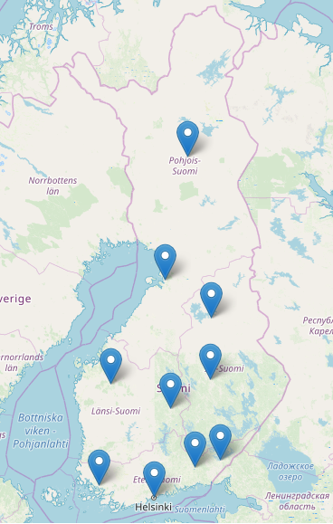

Is there less snow?

Analyzing the data of ten weather stations in Finland (1960-2000) reveals insights on snow depth, the length of the snow period and evolution of average temperatures.
The data provided by the
Finnish Institute of Meterology of snow and weather data, gives the opportunity to look at three questions over a 50 year period:
- Are temperatures on the rise?
- On average, is there less snow?
- Is there a correlation between temperature and snow?
All in all, each weather station observed a positive correlation between time and temperature across the period, but these are very small (r = 0.03 to 0.07)
Regarding the correlation between snow depth and time, there is no conclusive correlation. While we can observe certain decreasing patterns like in Turku, Kouvola, Helsinki), it is even the opposite for other weather stations.
Taking the example of one weather station (below), we can see a highly cyclical pattern concerning net snow gain/loss. There seems to be no real evolution both in the extremities nor in the yearly patterns.

Location of weather stations. Note: the population density is higher in the south.
Weather station (Helsinki): A loss (snow melting) would result in a point below 0°, whereas snowing results in a point over 0°.
Are temperatures on the rise?
Is there less snow?